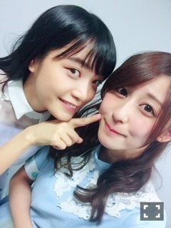

| 2016/06 17 Fri | 斎藤ちはる ハルジオンが道に咲いたら君のことを僕らは思い出すだろう。まいまいありがとう。(´>∀<｀)ゝ |
ちはるーむへようこそ(﹡ˆ ˆ﹡)

真夏の全国ツアーin静岡エコパアリーナ
2日目終了しました\( ˆoˆ )/
ということで
まいまい、卒業おめでとう♡♡
そして、今までありがとう。
わー。、まだ全然実感ないよー。、
まだ、また仕事場行ったらまいまいがそこにいそうだもん。
いつもみたいにくしゃっとした笑顔で
まいまいなりの低い声で
「ち〜ちゃん〜」って呼ぶの。
あの顔と声が日常じゃなくなるなんて。
まだ信じられない。
まいまいは、私にとってずっとずっと憧れであり、大好きな存在です。
まいまいのような人になりたい。
まいまいのような強い人に。
まいまいのような思いやりに溢れる人に。
まいまいのような誰からも愛される人に。
まいまいのような笑顔が絶えない人に。
まいまいのような人の支えになる人に。
まいまいのような自分よりも他人を大切にする人に。
まいまいのような弱音を吐かない人に。
まいまいのような可愛い人に。
まいまいのようなかっこいい人に。
私はなりたい。
こうして書き出してみると、本当にまいまいって凄い人だなって改めて思える。
こんなに素敵で、完璧な人がいたなんて
私はまいまいに出逢うまで知りませんでした。
今まで5年間ちょっと活動してきて、
まいまいの悪いところ、駄目なところ、嫌なところが
本当にひとつも見当たらない。
本当にこれって凄いことだと思います。
人として、1人の女性として、見本にしたい。
心からまいまいのような女性になりたい。
本当にまいまいに会えてよかった。
出逢えてよかった。
こんなに素敵な人と知り合えて
メンバーになって一緒に活動できてよかった。
まいまいという、深川麻衣という女性を、
私は一生忘れません。
私のお気に入りの写真。
何度目の青空か？選抜で、
Mステスーパーライブに初めて出演した時の写真。
まいまいはポジションが前で
よく話してたのが楽しかった。支えでした。
今日のライブでも何度目の青空か？
を歌ったんだけど、
オリジナルメンバーで歌えなかった。
10th選抜で私だけまいまいと歌えなかった。
悔しかった。
それだけが私の心残りです。
まいまい、今日本当に綺麗だったよ。
美しかった。
まいまい大好き。
これからもずっとよろしくね。
今日来て下さった皆さん、
応援して下さった皆さん、
ありがとうございました(﹡ˆ ˆ﹡)
ツアーはまだまだ続くので
まいまいの分もみんなで頑張っていきたいと思います！！
斎藤ちはる